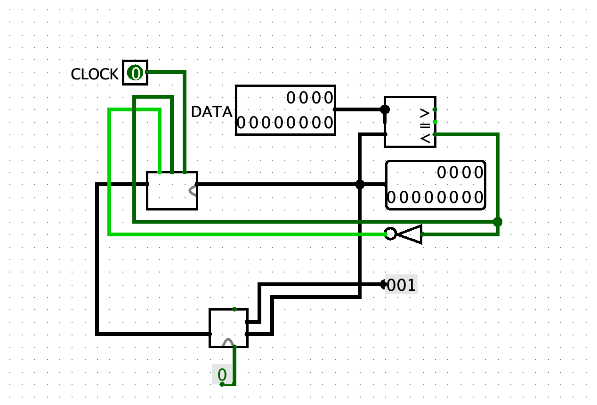

Dit verslag werd opgesteld door:
De oplossing bestaat uit de volgende bestanden (geef alle bestanden op):
12-bit register
Een register is een digitaal circuit ontworpen voor de opslag, retentie en overdracht van gegevens binnen een digitale schakeling. Deze registers zijn samengesteld uit flip-flops, waarbij elk afzonderlijk flip-flop in het register in staat is om 1 bit informatie vast te houden. De omvang van een register kan worden uitgebreid door meerdere flip-flops te combineren, wat leidt tot de vorming van een meervoudig-bit register. De flip-flops worden getriggerd door de falling edge van het kloksignaal (van 1 naar 0).De term "falling edge" duidt op de overgang van een hoog spanningsniveau (logische '1') naar een laag spanningsniveau (logische '0') binnen een kloksignaal. Het vermelde kloksignaal is een 1-bit input. De D-input is een 12-bit input voor de data die in de D flip-flops worden opgeslagen als het write-bit op 1 staat. De register-output is een output voor de data op de flip-flops.
Register File
Om een registerfile te maken, bestaande uit 8 registers van elk 12 bits, hebben we een circuit ontworpen dat bestaat uit twee componenten: een component om de registers te kunnen wijzigen (Write) en een andere component om ze te lezen (Read). Het circuit dat we hebben ontworpen, is hieronder beschikbaar.

- Component 1: Write
Dit component bevat de gegevens (in 12 bits) die moeten worden opgeslagen. Daarnaast is er een write bit om te bepalen of de registers al dan niet moeten worden gewijzigd, en een resetbit die alle registers naar hun oorspronkelijke staat terugzet. Bovendien is er een 3-bits invoer (23 = 8) met een decoder om te selecteren welk register moet worden overschreven met de nieuwe invoer.- Component 2: Read
Wanneer je gegevens wilt opslaan, is het belangrijk om te weten wat zich in je register bevindt. Hiervoor maken we gebruik van twee multiplexers met als invoer de 8 registers en een index om te bepalen welk register we willen uitlezen. De uitvoer is een 12-bits resultaat dat de gegevens van het geselecteerde register vertoont.
Counter
Een counter in computerarchitectuur is een digitale schakeling die het aantal gebeurtenissen of operaties telt. Deze counters vinden vaak hun toepassing in de besturingseenheid van een processor, waar ze de voortgang van programma-uitvoering volgen. Hierdoor worden opeenvolgende operaties en controlestructuren mogelijk gemaakt. Tellingen zijn van cruciaal belang voor taken zoals luscontrole, geheugentoegang en andere tijdgevoelige processen in een computer.
Om een counter te realiseren, is een kloksignaal vereist voor het register. Het register wordt continu met 1 verhoogd, waarbij de 12-bits Carry Look-Ahead Adder (CLA) van project 2 wordt gebruikt. Aan deze CLA is zowel een binaire 1 als de output van het register gekoppeld. Het optellen vindt plaats bij elk kloksignaal, maar alleen zolang de output van het register kleiner is dan de opgegeven waarde D.
Traffic Light
Met behulp van onze eerder verkregen counter kunnen we nu een verkeerslichtensysteem bouwen. De counter wordt geconfigureerd met de maximale waarde die het kan aannemen, samen met het kloksignaal van het klokonderdeel in Logisim. Voor het eerste verkeerslicht zijn de tijdstippen van lichtverandering als volgt: 8 (groen - geel), 12 (geel - rood) en 28 (of 0) (rood - groen). Wat betreft het tweede verkeerslicht, vinden de lichtveranderingen plaats bij 14 (rood - groen), 22 (groen - geel) en 26 (geel - rood).